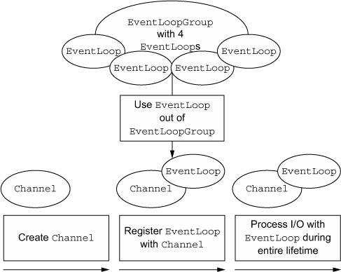
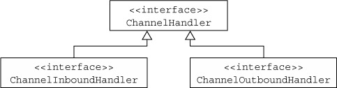
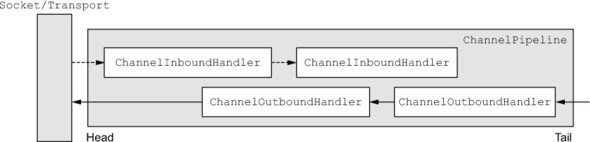
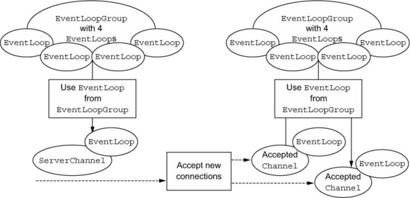

本章包含：
- Netty的技术与架构
Channel,EventLoop, 和ChannelFutureChannelHandler和ChannelPipeline- Bootstrapping
3.1 Channel, EventLoop和ChannelFuture
Channel, EventLoop和ChannelFuture可以看成是Netty对网络的抽象：
Channel:SocketEventLoop: 控制流、多线程和并发ChannelFuture：异步通知
3.1.1 Channel接口
基本IO操作(bind(), connect(), read(), write())依赖于底层网络传输。在基于Java的网络中，基础组成是Socket类。Netty的Channel接口提供了的API能大幅度减少直接操作Socket的复杂度。此外，Channel是所有扩展类的根类。下面是一些继承的类：
EmbeddedChannelLocalServerChannelNioDatagramChannelNioSctpChannelNioSocketChannel
3.1.2 EventLoop接口
EventLoop定义了Netty对连接生命区间事件处理的核心抽象。在后面的章节里我们会讨论EventLoop的细节。下图展示了Channel, EventLoop, Thread和EventLoopGroup之间的关系。

关系是：
- 一个
EventLoopGroup包含一个或多个EventLoop EventLoop在其生命周期内绑定到单个Thread- 所有的IO事件由
EventLoop在其专属Thread内处理 Channel注册到一个EventLoop内- 一个
EventLoop可以关联多个Channel
注意，这个实际中，对于给定Channel的IO操作都是在同一个线程内执行的，这样可以避免同步问题。
3.1.3 ChannelFuture接口
Netty中所有的操作都是异步的。因为操作不一定能立即返回，因此我们需要一个方法来在后期获取结果。Netty提供了ChannelFuture,它的addListener()方法注册了ChannelFutureListener用来在操作完成后发出通知。
后面我们会深入讨论EventLoop和EventLoopGroup
3.2 Channelhandler和ChannelPipeline
下面我们来详细讨论如何管理数据流和执行应用处理逻辑。
3.2.1 ChannelHandler接口
从开发者角度看，Netty的最基本构建式ChannelHandler，它包含着用来处理inbound和outbound数据的逻辑。这是因为ChannelHandler方法由网络事件触发。事实上，ChannelHandler几乎可以用来黑醋栗任何类型的动作，比如数据转换和异常处理。
例如，ChannelInboundHandler是经常实现的子接口。这个类型接收inbound事件和数据用于处理业务逻辑。也可以从ChannelInboundHandler中将数据作为响应flush给客户端。应用的业务逻辑通常分布在多个ChannelInboundHandler中。
3.2.2 ChanelPipeline接口
ChannelPipeline提供了ChannelHandler链的容器，并且定义了API用来在链上传递inbound和outbound事件。当有Channel创建时，它会自动的赋值给它的ChannelPipeline。
ChannelHandler安装到ChannelPipeline的过程：
ChannelInitializer被注册到ServerBootstrap- 调用
ChannelInitializer.initChannel()时，ChannelInitializer安装一系列自定义的ChannelHandler到pipeline中 ChannelInitializer将自己从ChannelPipeline中删除
ChannelHandler可以看作是一个通用容器用来处理时间和数据。

ChannelPipeline中ChannelHandler的执行顺序按照他们加入到链中的顺序。
对于客户端来说，outbound是从客户端到服务器的方向，inbound则相反。

上图也说明inbound和outbound可以添加到同一个pipeline中。如果读取到一个消息，它会从pipeline头开始，并且传递给第一个ChanneiInboundHandler。这个handler可能修改也可能不修改数据，之后再将数据传递给下一个ChannelInboundHandler。最后数据到达pipeline的尾部，所有的处理会被终止。
outbound数据流动先从尾部开始，直到到达到头部，此时，outbound数据到达网络传输，这里是一个Socket。
更多关于inbound和outbound handler
时间可以通过每个方法的ChannelHandlerContext方法进行向前传递。有时你想忽略一些不感兴趣的事件，Netty提供了抽象基础类ChannelInboundHandlerAdapter和ChannelOutboundHandlerAdapter。每一个都提供了一个实现，用于将事件传递给下一个handler。我们可以扩展这个类，重写感兴趣的方法。
虽然inbound和outbound handler都继承自ChannelHandler, Netty还是会区分ChannelInboundHandler和ChannelOutboundHandler，并且确保数据只在同一类型的handler间传递。
当ChannelHandler添加到ChannelPipeline中时，它也被传递了一个ChannelHandlerContext参数。这个参数代表着ChannelHandler和ChannelPiepline之间的一个绑定。虽然这个对象可以被用于获取底层的Channel，但更多的是用来写outbound数据。
Netty中有两种方法用来发送数据。你可以直接向Channel或者与ChannelHandler关联的ChannelHandlerContext对象中写数据。前者由ChannelPipeline的尾部开始消息，后者由ChannelHandlerPipeline的下一个handler开始消息。
3.2.3 ChannelHandler
Netty以多种adpater类实现的默认handler。常用的adapter有：
ChannelHandlerAdapterChannelInboundHandlerAdapterChannelOutboundHandlerAdapterChannelDuplexHandlerAdapter
线面我们来看看ChannelHandler子类型：encoder, decoder, SimpleChannelInboundHandler<T>(ChannelInboundHandlerAdapter的子类型)
3.2.4 Encode和Decoder
当Netty发送或者接受消息时，数据会发生转换。inbound消息会被decode，也就是会从bytes到其他格式，一般是Java对象。outbound消息会被从当前格式转换到bytes格式，这是encode。这是因为网络数据的传输都是bytes格式。
许多抽象类用来做encoder和decoder. 一般来说，基本类型都会有类似ByteToMEssageDecoder或者MessageToByteEncoder的名字。
Netty提供的所有的encoder/decoder adapter类都实现了ChannelInboundHandler或ChannelOutboundHandler。
对于inbound数据，channelRead方法/事件会被重写。这个方法会会调用decode方法，并且将decoded bytes传递给后面的ChannelInboundHandler。
outbound消息于此相反。
3.2.5 抽象类SimpleChannelInboundHandler
应用中常用的场景是解析消息，对数据执行逻辑。要创建这样一个ChannelHandler，只需要继承SimpleChannelInboundHandler<T>，其中T是想要处理的消息类型。在这个handler中，重写一个或多个方法，并且获取ChannelHandlerContext引用。
在这种类型场景下，最重要的方法是channelRead0(ChannelHandlerContext, T)。
3.3 Bootstrapping
Netty的bootstrap类提供了为应用网络层配置的容器。包含配置端口、主机地址等。
有两种类型的bootstrap，一种用于客户端(Bootstrap)，一种鱼鱼服务端(ServerBootstrap)。
| 类别 | Bootstrap | ServerBootstrap |
|---|---|---|
| 网络功能 | 连接远程主机和端口 | 绑定到本地端口 |
| EventLoopGroup数量 | 1 | 2 |
启动一个客户端只需要一个EventLoopGroup，但是ServerBootStrap却需要两个。这是因为服务端需要两个不同集合的Channel，第一个包含一个单独的ServerChannel来代表服务器本身监听的socket。第二个集合代表用于处理客户端请求的Channel。

与ServerChannel关联的EventLoopGroup分配一个EventLoop用来负责为连接请求创建Channel。一旦接受了连接请求，第二个EventLoopGroup分配一个EventLoop给Channel。
3.4 总结
本章主要讨论了Netty的技术和架构。详细回顾了ChannelHandler, ChannelPipeline和bootstrapping.
后续章节会深入讨论这些。